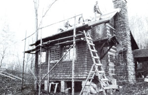
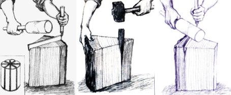
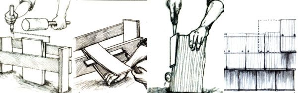
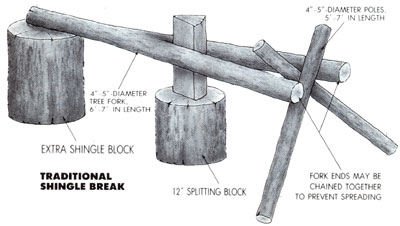
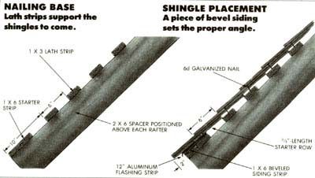

Hand-split "shakes" are unmatched for beauty.
Near as Peter Gott can recollect, he's split some 15,000 shingles over the past quarter of a century. Appalachia's master hewn-log craftsman used the most recent batch of 4,300 in the fall of '85 to replace the original 23-year-old cedar shingle roofs on the Gott family cabin and outbuildings in Cowbell Holler, which is just a piece off Tater Gap Road in the Smoky Mountain foothills of western North Carolina.
And as Peter proved to me-among the least crafty of wood craftsmen-anyone who owns a few inexpensive hand tools and a good measure of patience can learn to split (or rive, to use the appropriate lingo) beautiful wood shingles.
When calculating the number of shingles required for a roofing job, Gott figures 400 standard-sized shingles (3 1/2" to 9" wide by 19" long) per square (100 square feet) of roof to be covered. While a novice would have to hustle to rive even a few dozen usable shingles in a day, Peter can turn out several hundred in the same period of time.
Here's how it's done:
First you need a tree-or maybe several trees, depending on the number of shingles required and the diameter of the tree. If you live in or near the eastern hardwood forests, just about any variety of oak will suffice-, Peter uses red oak because it's both plentiful and easy to split (though less durable than white oak). Out west, most varieties of pine and some firs are suitable for shingles, but these softwoods should be treated with a low-toxicity, nonflammable wood preservative to forestall rotting.
Whatever variety you decide to use, the tree should be free-of knots, true of trunk, straight-grained (as opposed to twisted) and at least 24" in diameter. After felling the tree, saw the trunk into round sections (shingle blocks) 19" long, being careful to cut straight across rather than at angles. Roll or haul the blocks to the work area and stand them on end for splitting. (Yes, you rive shingles from green wood.)
Splitting, or "riving," shingles isn't as difficult as you might imagine. Master craftsman Peter Gott can hand-split them from red oak as fast as his wife, Polly, can nail them in place. Of course, you won't pick up that kind of speed without a good bit of practice. The instructions provided here should get you started.
You'll need only a few inexpensive hand tools to get splitting: a froe (a short-handled cleaving tool), a hardwood mallet or club (for driving the froe), a metal splitting wedge (or two), a sledgehammer (for driving the wedge) and a rule. Dividers are handy but not essential.
You'll also need a shingle break, which is a jig used to hold shakes during the final few splits. A traditional shingle break can be made from a 6' to 7' section of 4"- to 5"-diameter forked tree, with the forks accounting for about 3/4 of the overall length. (Peter says red maple and dogwood often have perfect forks for this purpose.) Use two poles 5' to 6' long to support the split end of the fork, and rest the butt on a block of wood about 19" high. On the ground directly beneath the V of the fork, place a 12"-square wood block to support the bottoms of the shingle bolts. (If you have trouble with the fork spreading during splits, Peter recommends binding the forked ends together with light chain.)
Peter prefers this traditional-type break for making the intermediate splits, and uses a lumber-scrap break for the final, precise split. This second break is nothing more than a short length of large-diameter log that sup ports a frame of scrap lumber (an extra 19"-long shingle block is ideal). You can make it in just a few minutes, and here's how:
Stand a hardwood shingle block upright, and nail a couple of 2 X 6s (or 2 X 4s, 2 X 8s, etc.)-cut long enough to reach from the ground to about 16" above the top of the log-upright and parallel on either side of the block so that they stick up like horns. Now nail a length of 1 X 6 (or 1 X 4, 1 X 8, etc.) from the front edge of one of the uprights to the rear of the other, with the bottom edge of the 1 X 6 positioned parallel to and about 3" above the top of the support log. Finally, nail a second 1 X 6 horizontally to the front edges of the two uprights so that its bottom is 3/4" above the top edge of the lower 1 X 6.
With the shingle break constructed and your tools and materials assembled (see the accompanying sidebar for details), examine the end grain of the first shingle block to be split. That large dark area at the center is the heartwood, and the lighter layer just under the bark is the sapwood. Everything in between is shingle meat.
Before splitting, mark each shingle block into pie-slice-shaped segments measuring 3 1/2" wide at the outside edge, taking the measurements just inside the inner ring of sapwood. Most of your blocks will already have a small split in the center; trace it out to the edge (along the radial lines), and make your first mark here. Next, step off with 3 1/2" marks in both directions until the marks meet (more or less) on the opposite side of the block. Finally, go back and darken every fourth mark.
Now you're ready to split, halving the block along the marks you've just made, beginning with the darker lines. The overall idea here is that each split will divide the wood in half equally, helping assure that the splits will run true.
To make the initial split, start the blade of the froe into the wood with a few solid blows from your mallet, then apply lateral pressure on the handle to widen the split. (If necessary, remove the froe and use a sledge and wedges to finish the split.) Next-again following the guidelines nearest to the center of each section-split the halves equally so that you have 4 more or less equal pie-shaped wedges.
Still following your marks, go on to split each quarter-round block in half so that you have 8 sections. Now, following the curvature of the wood's annual growth rings, use wedge and sledge to split a few inches of heartwood (which is often twisted or knotty) from the point of each triangular section- then use froe and mallet to split the blunted wedges in half again.
After splitting off as many 3 1/2"-wide wedges as each section of log will provide, carefully split each wedge into two 1 3/4" slices. Now get rid of the bark and rot-prone sapwood by splitting it off with the same tools you employed for removing the heartwood tips; split in from both ends and then chop off what's left in the middle.
Here's where the going calls for precision. Move over to the shingle break, stand a 1 3/4"-wide shake on end and wedge it into the apex of the reclining V formed by the two 1 X 6s. Now carefully center the froe and begin the split with a gentle tap from your mallet. With the froe embedded blade-deep in the wood, pull the shake out of the V, wedge it flat between the upper and lower horizontal 1 X 6s and apply downward pressure on the handle to finish the split.
If one of these final splits tries to "run out" to one side or the other rather than going straight down the center, turn the shake so that its thickest side is to the bottom, apply downward pressure on the handle of the froe (and thus on the shake) and the split should turn back toward center. (You may have to rotate a problem shake several times to keep the split running straight.)
Repeat this procedure until you have a pile of shingles each measuring approximately 7/16" on the thick edge and tapering evenly to about 3/16" on the thin edge. If some of your shingles have irregularities, such as high spots on one face or the other, they can be dressed up a bit with a draw knife or a hewing hatchet (which, like a broadax, is beveled only on one side). Ragged edges can be smoothed with a hewing hatchet or a slick (a very large chisel-3' or so overall-designed for working logs).
Tie the finished shingles in neat, tight bundles of 20, stacked with thin and thick edges alternating to prevent warping. (These bundles of 20 make for quick counting and are light enough to tote up a ladder to the roof.) It's best to install fresh shingles soon after riving them, while they're still green and pliable. But if you must store yours for some time, tie the bundles tightly to prevent warping.
Many frontier-America log cabins were roofed with very large hand-split shingles attached to purlins or lath, in many cases simply weighted down rather than nailed. Since the lath strips were spaced several inches (and purlins up to 3') apart, a couple of overlapping layers of wood shingles provided the only covering for most of the roof -no solid wood decking, no vapor barrier and no insulation.
While some larger early American log homes had crawlspace attics, most frontier cabins depended on sleeping lofts to provide a thermal buffer against both the sun's heat in summer and the cold of winter. This arrangement provided a fairly comfortable interior temperature on the ground floor, but turned the loft into an ice chest in winter and a sauna in summer.
While strongly tradition-oriented, Peter Gott doesn't recommend being that traditional (except, perhaps, for outbuildings). Rather, he suggests the following roofing arrangement:
No matter what type of outer roofing material you plan to use (wood, asphalt, fiberglass, metal, etc.), start by nailing a strong decking-such as kiln-dried, V-joint, tongue-and-groove pine boards or exteriorgrade plywood-over the rafters. (Note: Traditional rafters are straight, peeled poles, at least 4" to 6" in diameter, with their top sides flattened so that dimension lumber can be nailed to them. When such poles aren't available, Peter uses 4" X 6" or larger sawn timbers.)
Over the decking, tack down a layer of 30" pound roofing felt. Next, stand a row of vertical 2 X 6s-one positioned directly above each rafter-on edge and toenail them through the decking and into the rafters, filling the spaces between the 2 X 6s to within an inch of the top with fiberglass batting or urethane foam insulation. (That inch of space above the insulation-in combination with screen vents at the bottom of the roof and, if possible, at the ridge-will allow for air circulation and prevent condensation.) The top layer can be either plywood sheathing (best under asphalt shingles), 1 X 6 boards (best under metal roofing) or 1 X 3 lath strips (for wood shingles).
Peter begins each shingling job by nailing a 1 X 6 strip of bevel siding (thick edge down) along the eave (bottom edge of the roof to set the proper angle for the first row of shingles. He then nails a 1 ' -wide strip of aluminum flashing atop the bevel siding so that it overhangs the eave by 3/4", bending the resulting 3/4" metal lip down to form a "drip edge" that prevents water from being sucked up under the sheathing through the wicking action of the wood.
The first row (along the eave) gets 2 thicknesses of shingles. The bottom layer is cut down to 2/3 length, with a layer of fulllength shingles nailed directly on top-with the joints in the 2 layers staggered to prevent leaks-to provide a full overlap that extends 1 1/2" to 2" below the aluminum drip edge. Using a chalk line to keep the rows straight, Peter begins a new row of shingles every 6" up the roof. Given the 19" average length of the shakes, this provides a triple overlap for maximum protection against leaks, should a shingle split.
Working from either gable end of the roof, Peter lays the first shingle in each row with its thick edge facing out. The remaining shakes in the row are usually alternatedthick edges together, then thin edges together-leaving a gap of 1/8" to 1/4" between shingles. Each shingle overlaps the row below by about 1/3, so that no 2 joints line up in 3 successive layers. Rule: Each new shingle should cover the shingle below by at least 1 1/2", and the one below that by at least 1/2".
To secure the roof, Peter uses two 6penny galvanized nails in each shingle, placing the nails about 3/4" in from each edge and 7 1/2" or so up from the butt (aligned to penetrate the underlying lath strips); this way, the nailheads will be covered by the next row of shingles.
Peter weatherproofs the ridge with an underlying strip of 20"-wide aluminum flashing, folding the flashing over the ridge and securing it under the final couple of rows of shingles on each side of the ridge. And while many builders trim the top row of shingles level with the ridge and then cap the roof with a decorative row of horizontal shingles, Peter prefers the traditional Appalachian "feathered ridge," wherein the top 2 rows of shingles on the windward side of the roof jut up several inches above the ridge to act as a crude but effective flashing.
Hand-splitting wood shingles is quite the rustic and romantic project, and when a master craftsman such as Peter Gott does it, riving looks like child's play. But let's be reasonable. By the time a novice cuts, limbs, sections and hauls in a large tree for shingle stock, cobbles together a shake break, then splits a few thousand shingles . . . is it really worth all the sweat and smashed fingernails just to save a few bucks?
From a purely economic viewpoint-unless you're up against a financial wall and have rain pouring in through holes in your roof-the answer is probably no. But there's more to doing for yourself than simple economics. What does make riving your own shingles worth the effort is the rush of pride you'll get-for years to come-every time you lift your gaze to your rooftop handiwork.
Editor's Note: We've prepared a 60-plus construction manual detailing Peter Gott's Appalachian log-building methods. To order this essential handbook, see page 113.
|
 Reroofing the Gott cabinis a job for the entire family |
 |
 |
|
 |
 |
|